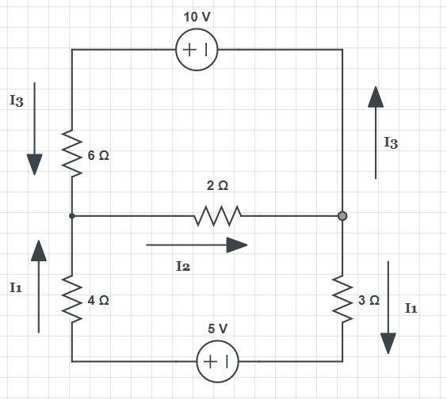
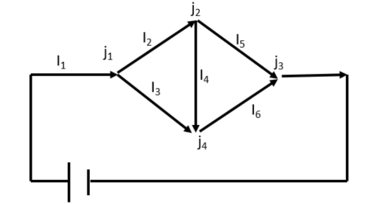

You are working in a laboratory that does experiments with animals. The animals in one particular experiment
are to be kept on a strict diet of 20 grams protein and 6 grams fat each day. There are two food mixes the lab uses.
Mix A has 10% protein and 6% fat. Mix B has 20% protein and 2% fat. Your task is to determine how many grams of each mix
should be used to obtain the right diet for a single animal.
How many equations will you need to figure out the solution? What does it/do they represent?
How much of each mix do you need? How do you solve the equation(s)?
Example 2 -
Consider the three systems of linear equations below. Identify if each system has \(0, 1\) or \(\infty\) solutions.
$$2x - y = -1$$
$$2x + y = -3$$
$$6x - 9y = 8$$
$$10x - 15 y = -20$$
$$8x + 10 y = 18$$
$$20x + 25 y = 45$$
Example 3 - Lean manufacturing
Leanmanufacturing is a corporate philosophy or operation strategy built around eliminating waste. This includes waste in inventory, production, and labor.
Consider a factory that makes down jackets, vests, and comforters. A jacket requires 3 lbs of down, a vest 2 lbs, and a comforter 4 lbs.
A jacket takes 2 hours of labor to make, a vest requires 1 hour of labor, and a comforter also requires 1 hour.
The profit from jackets and vests are $6 each, and the profit from a comforter is $2.
Each week the factory has exactly 600 pounds of down, 275 available manhours and wants a weekly profit of $1150. How many jackets, vests, and comforters should it produce in order to eliminate any excesses in down and labor hours?
Example 4 - Kirchoff's Laws

The multiloop circuit shown above has two junctions and three branches carrying currents, \(I_1, I_2, I3\).
Kirchoff's Voltage Law says that the sum of the voltage drops around any loop must be zero.
The voltage drop across a resistor is given by Ohm's Law (\(V = IR\)) where \(I\) is the current and \(R\) is the resistance.
Kirchoff's Current Law says that the sum of the currents at any junction must be zero (direction is important).
Explain why the system below for the currents follows from Kirchoff's Laws.
$$I_1 + I_3 - I_2 = 0$$
$$-I_1 + I_2 - I_3 = 0$$
$$4I_1 + 2 I_2 + 3I_3 = 5$$
$$6I_3 + 2I_2 = 10$$
$$6I_3 - 4I_1 - 3I_1 = -5 + 10$$
Write the system as an augmented matrix.
Example 5 - Initial value problems
Consider the DE
$$ y''' - 2y'' - y' + 2 = 0$$
with general solution
$$y(t) = c_1 e^{-t} + c_2 e^{t} + c_3 e^{2t}.$$
Label this DE.
Is \(y(t)\) a solution to the DE?
Regardless of your answer above, if \(y(0) = 1, y'(0) = y''(0) = 0\), set up a system of linear equations to find \(c_1, c_2\), and \(c_3\).
Write this system as an augmented matrix.
Find \(c_1, c_2, c_3\).
Example 6 - More Kirchoff's Laws

The multiloop circuit shown above has four junctions, \(j_i\), and six branches carrying currents, \(I_i\).
Kirchoff's Current Law says that the sum of the currents at each junction must be zero.
Write a system of equations for \(I_1, I_2, I_3, I_4, I_5, I_6\).
Write the system as an augmented matrix.
Reduce the system to RREF.
How many parameters are needed to describe the solution set?
Use row operations (Gaussian Elimination) to reduce this matrix to reduced row echelon form (RREF).
How many solutions to the system are there?
Example 8 - movie theater
A 350 seat movie theater charges $10.50 admission for adults and $7.50 for children.
If the theatre is full for a show and $3411 is collected, determine how many of each type of ticket was sold.
Identify the variables/unknowns that we need to find.
Write a system of equations that govern this problem.
Write your system above as an augmented matrix.
Use Gaussian elimination to reduce the matrix to RREF.
How many possible ways are there to sell the tickets that earn the revenue given above?
Example 9 - Library
The public libary is budgeted for fiction, nonfiction, and reference books as follows:
Purchase 500 books a month for a total of $19,500.
Purchase 50 more fiction than reference books.
The average cost of fiction books is $30; nonfiction books are $40; and reference books are $50.
How many of each type of book should the library acquire each month?
Identify the unknowns.
Write as a system of linear equations.
Write this system as an augmented matrix.
Use substitution, elimination, or row operations to solve the system.
How many ways are there to satisfy the budget above?